Julia Fukuyama
The file wells.dat contains data on 3,020 households in
Bangladesh whose wells had arsenic levels above the national drinking
water standard of 50 micrograms per liter. The variables are:
switch: the response: whether or not the household
switched after being encouraged to do so (after high arsenic was
measured.)
arsenic: the arsenic concentration in hundreds of
micrograms per liter.
dist: the distance to the nearest safe well in
meters.
assoc: whether anyone in the household is in a
community association.
educ: the years of education of the head of the
household.
We load at the data and look at the numerical summary and a pairs plot:
## switch arsenic dist assoc
## Min. :0.0000 Min. :0.510 Min. : 0.387 Min. :0.0000
## 1st Qu.:0.0000 1st Qu.:0.820 1st Qu.: 21.117 1st Qu.:0.0000
## Median :1.0000 Median :1.300 Median : 36.761 Median :0.0000
## Mean :0.5752 Mean :1.657 Mean : 48.332 Mean :0.4228
## 3rd Qu.:1.0000 3rd Qu.:2.200 3rd Qu.: 64.041 3rd Qu.:1.0000
## Max. :1.0000 Max. :9.650 Max. :339.531 Max. :1.0000
## educ
## Min. : 0.000
## 1st Qu.: 0.000
## Median : 5.000
## Mean : 4.828
## 3rd Qu.: 8.000
## Max. :17.000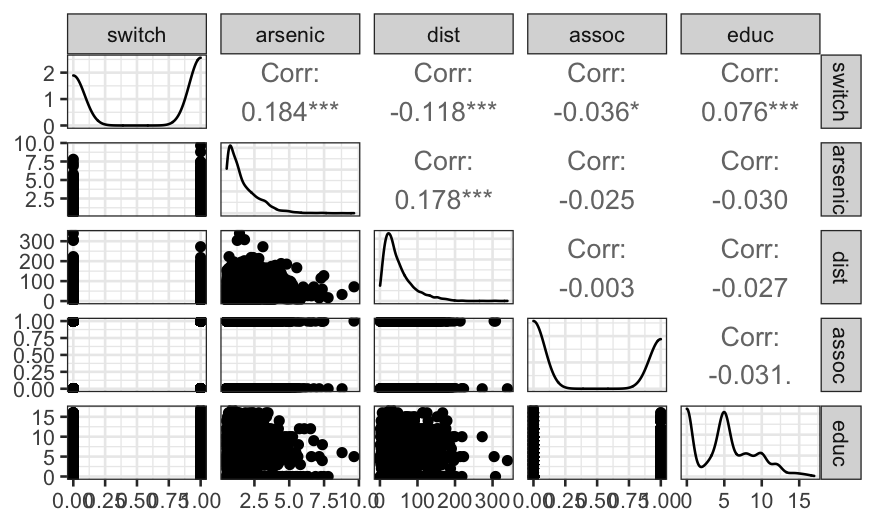
As we might expect, distance and education level are positively associated with switching, while arsenic level is negatively associated. Surprisingly, the correlation between belong to an association and switching is negative, though the relationship is very weak.
Distance and arsenic levels should be the best predictors, so let’s look more closely at the distributions of those variables.
ggplot(wells, aes(x = dist)) +
geom_histogram(breaks = seq(0, 340, 10)) +
xlab("Distance to nearest safe well (meters)")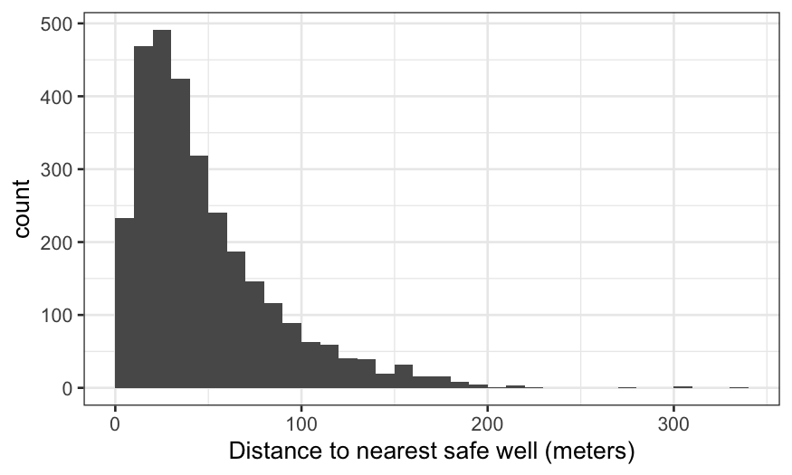
We see the distribution of distance peaks around 40–60 meters, then is strongly right-skewed. We should keep the possibility of a transformation in mind.
Then arsenic:
ggplot(wells, aes(x = arsenic)) +
geom_histogram(breaks = seq(0, 10, 0.25)) + xlab("Arsenic concentration (100 mg/liter)")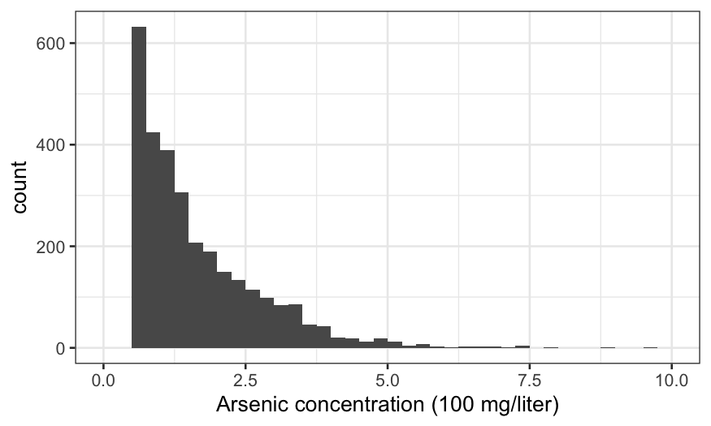
There are no observations with arsenic below 0.5, because these are considered “safe” and the households don’t get advised to switch wells. Otherwise, the distribution is against strongly right-skewed, suggesting a transformation.
Note that the scales of dist and arsenic
are quite different. Some authors suggest standardizing the data for
interpretability, so that predictors are on approximately the same
scale. That’s not a bad idea but we will hold off for now.
And finally education:
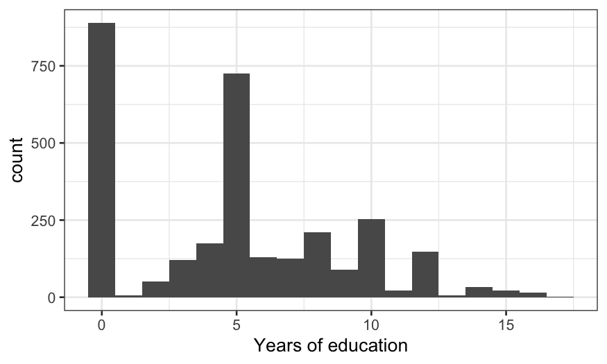
The distribution is weird. 0 (no education) and 5 (primary school only) are the magic numbers.
One way of approaching EDA is to throw everything into your model and then get rid of terms you don’t need. Another strategy is to start with simple models and gradually build up to complex models. Let’s take this second approach for now.
We’ll start by predicting switching, using distance as the only response. There’s no reason why we can’t try loess:
ggplot(wells, aes(x = dist, y = switch)) +
geom_jitter(width = 0, height = 0.1) +
geom_smooth(method = "loess") +
xlab("Distance from nearest safe well") +
ylab("Probability of switching")## `geom_smooth()` using formula 'y ~ x'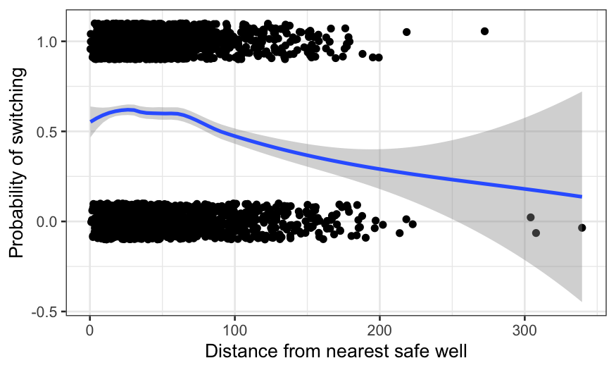
We can interpret the fit as the probability of switching wells, given the distance to the nearest safe well. There’s a bump for very low distances (which is probably just noise) and then a decline. We could play around with the smoothing parameters to get something more pleasant-looking. Instead, we’ll fit a logistic regression to guarantee a decreasing relationship.
gg = ggplot(wells, aes(x = dist, y = switch)) +
geom_jitter(width = 0, height = 0.1) +
geom_smooth(method = "loess")
gg + geom_smooth(method = "glm", method.args = list(family = "binomial"), color = "orange") +
xlab("Distance from nearest safe well") +
ylab("Probability of switching")## `geom_smooth()` using formula 'y ~ x'
## `geom_smooth()` using formula 'y ~ x'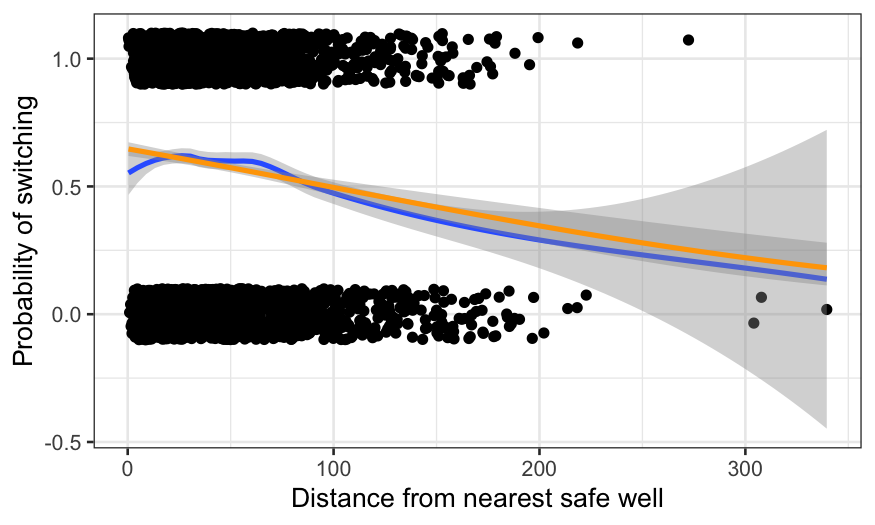
The parametric method imposes a functional form on the data. This aids in interpretability: the fit can now be described in a couple of parameters, and the weird bump at the beginning is gone. The cost is some lack of fit: perhaps the probability should decrease more quickly as the distance gets beyond about 60 meters (remember that water is heavy and it’s tiring to carry buckets back and forth over long distances.)
Let’s try the same kind of approach using arsenic concentration as the sole predictor.
gg = ggplot(wells, aes(x = arsenic, y = switch)) +
geom_jitter(width = 0, height = 0.1) +
geom_smooth(method = "loess")
gg + geom_smooth(method = "glm", method.args = list(family = "binomial"), color = "orange") +
xlab("Arsenic concentration") +
ylab("Probability of switching")## `geom_smooth()` using formula 'y ~ x'
## `geom_smooth()` using formula 'y ~ x'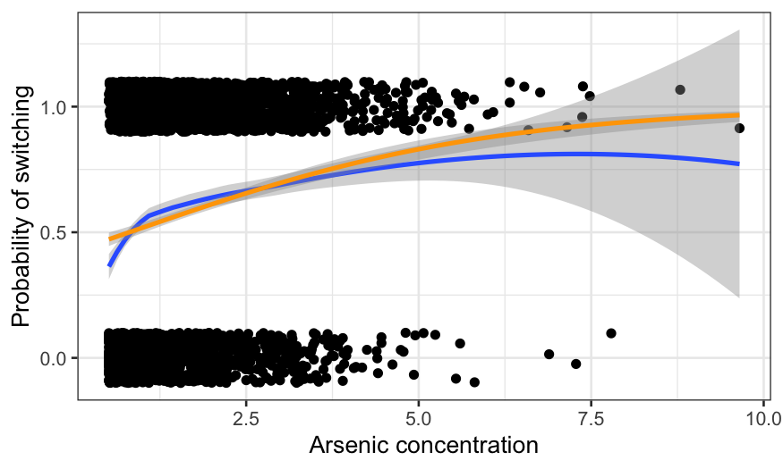
The fits diverge at arsenic levels above about 5. That seems to be because of a couple of extremely high arsenic observations which led to switching. Note however that not much of the data has arsenic above 5, so it remains to be seen how much this matters.
Also note the difference in fits for low levels of arsenic. This is more worrisome than the difference at high levels because there is actually a lot of data there. It seems likely that there is a lack of fit for the low concentrations that logistic regression can’t handle. We’ll come back to this later.
We now want to know how the chance of switching depends on distance and arsenic simulataneously. Before fitting a model, we plot the data to get a feel for it. We’ll use color to distinguish between households that switch and households that don’t.
ggplot(wells, aes(x = dist, y = arsenic, color = factor(switch))) +
geom_point(alpha = 0.5) +
xlab("Distance from nearest safe well") +
ylab("Arsenic concentration") +
labs(color = "Did they switch?") +
scale_color_manual(values = c("#E69F00", "#56B4E9"), labels = c("No", "Yes"))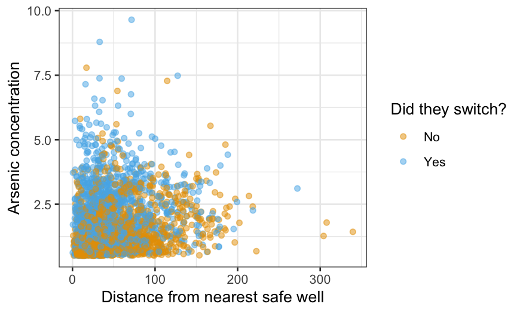
The alpha = 0.5 makes the points slightly transparent,
which can help visually when you have a lot of data. Still, it’s hard to
work out how switching depends on the other two variables from this
graph; that’s why we’re fitting a model. The main thing to take home
from the graph is the lack of data in the top right: we have no
observations at all with both distance above 200 and arsenic above 4, so
we should not try to generalize to this region.
Density plots are actually more useful for comparing the two
distributions, and we can use geom_density2d to make such a
plot:
ggplot(wells, aes(x = dist, y = arsenic, color = factor(switch))) +
geom_density2d() +
xlab("Distance from nearest safe well") +
ylab("Arsenic concentration") +
labs(color = "Did they switch?") +
scale_color_manual(values = c("#E69F00", "#56B4E9"), labels = c("No", "Yes"))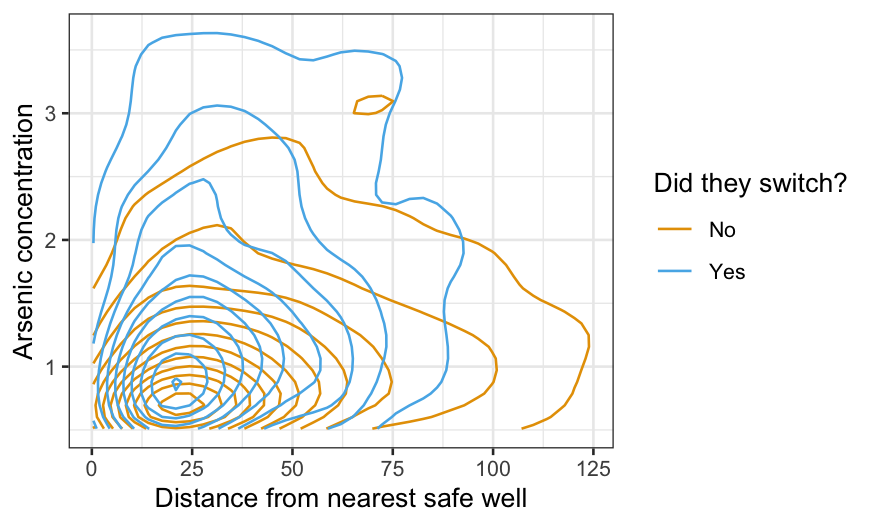
We see here that people who didn’t switch tend to be at lower arsenic levels and larger distances from the nearest safe well, which makes sense.
Now we’ll fit a logistic regression using both distance and arsenic as predictors. We first fit an additive model, i.e. with no interaction.
switch.logit = glm(switch ~ dist + arsenic, family = "binomial", data = wells)
summary(switch.logit)##
## Call:
## glm(formula = switch ~ dist + arsenic, family = "binomial", data = wells)
##
## Deviance Residuals:
## Min 1Q Median 3Q Max
## -2.6351 -1.2139 0.7786 1.0702 1.7085
##
## Coefficients:
## Estimate Std. Error z value Pr(>|z|)
## (Intercept) 0.002749 0.079448 0.035 0.972
## dist -0.008966 0.001043 -8.593 <2e-16 ***
## arsenic 0.460775 0.041385 11.134 <2e-16 ***
## ---
## Signif. codes: 0 '***' 0.001 '**' 0.01 '*' 0.05 '.' 0.1 ' ' 1
##
## (Dispersion parameter for binomial family taken to be 1)
##
## Null deviance: 4118.1 on 3019 degrees of freedom
## Residual deviance: 3930.7 on 3017 degrees of freedom
## AIC: 3936.7
##
## Number of Fisher Scoring iterations: 4As always, the coefficients are the most important things here. According to the model,
\[ \textrm{logit}[P(\textrm{switch}|{\textrm{dist, arsenic}})] = 0.003 - 0.00897 \times \textrm{dist} + 0.4608 \times \textrm{arsenic}. \]
As in the continuous case, we visualize the fit by drawing multiple
curves representing different values of one of the predictors. Let’s
display the switching probability as a function of distance for a few
values of arsenic. Note that when we use the augment()
function, we specify type.predict = "response" to get the
probabilities and not their logits.
dist_df = expand.grid(dist = 0:339, arsenic = seq(0.5, 2.5, 0.5))
dist_preds = augment(switch.logit, type.predict = "response", newdata = dist_df)
ggplot(dist_preds, aes(x = dist, y = .fitted, group = arsenic, color = arsenic)) +
geom_line() +
xlab("Distance from nearest safe well") +
ylab("Probability of switching") +
labs(color = "Arsenic concentration") +
scale_color_viridis()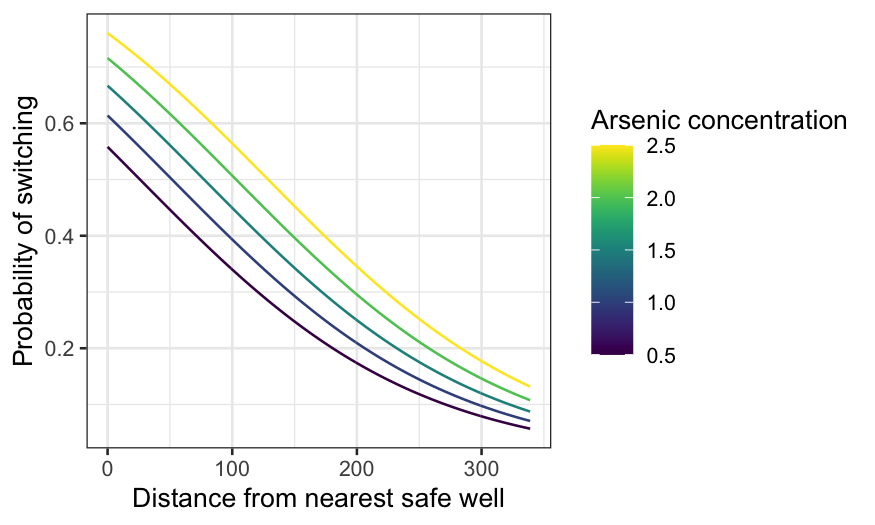
The median arsenic level is 1.3. If arsenic is near the median, the probability of switching declines from 60-something percent if you’re right by a safe well to less than 10% if the nearest safe well is hundreds of meters away.
Now find prediction curves for arsenic for a few different distances:
arsenic_df = expand.grid(arsenic = seq(0.5, 10, 0.01), dist = seq(0, 100, 25))
arsenic_pred = augment(switch.logit, type.predict = "response", newdata = arsenic_df)
ggplot(arsenic_pred, aes(x = arsenic, y = .fitted, group = dist, color = dist)) +
geom_line() +
xlab("Arsenic concentration") +
ylab("Probability of switching") +
labs(color = "Distance from nearest safe well") + scale_color_viridis()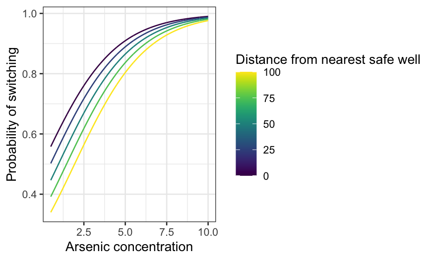
The median distance to a safe well is about 37 meters. At that distance, if the arsenic level is only just over the safety threshold, it’s about 50–50 whether a household switched. On the other hand, at the highest levels of arsenic, households will almost certainly switch even if the nearest safe well is quite far.
We now add an interaction term between distance and arsenic.
##
## Call:
## glm(formula = switch ~ dist * arsenic, family = "binomial", data = wells)
##
## Deviance Residuals:
## Min 1Q Median 3Q Max
## -2.7823 -1.2004 0.7696 1.0816 1.8476
##
## Coefficients:
## Estimate Std. Error z value Pr(>|z|)
## (Intercept) -0.147868 0.117538 -1.258 0.20838
## dist -0.005772 0.002092 -2.759 0.00579 **
## arsenic 0.555977 0.069319 8.021 1.05e-15 ***
## dist:arsenic -0.001789 0.001023 -1.748 0.08040 .
## ---
## Signif. codes: 0 '***' 0.001 '**' 0.01 '*' 0.05 '.' 0.1 ' ' 1
##
## (Dispersion parameter for binomial family taken to be 1)
##
## Null deviance: 4118.1 on 3019 degrees of freedom
## Residual deviance: 3927.6 on 3016 degrees of freedom
## AIC: 3935.6
##
## Number of Fisher Scoring iterations: 4The numbers are a bit hard to interpret. For example, the sign of the interaction term is negative, but it’s hard to know exactly what this means (especially since the signs for distance and arsenic go in different directions.) The interpretation is easier if we just plot curves.
dist_int = augment(switch_int, type.predict = "response", newdata = dist_df)
ggplot(dist_int, aes(x = dist, y = .fitted, group = arsenic, color = arsenic)) +
geom_line() +
xlab("Distance from nearest safe well") +
ylab("Probability of switching") +
labs(color = "Arsenic concentration") + scale_color_viridis()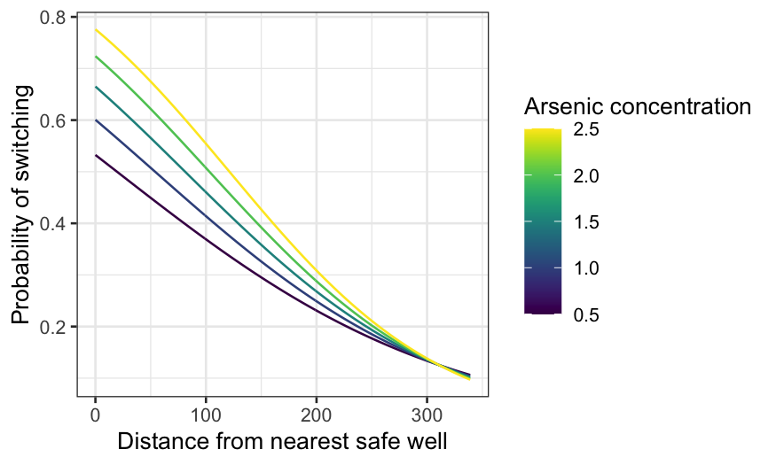
The interaction brings the curves together as distance increases. If the nearest safe well is close, it makes a big difference whether the arsenic concentration is just over the limit or much bigger. If the nearest safe well is far, it makes little difference: people are unlikely to switch no matter the concentration. The curves meet up beyond 300 meters, though we only have three observations where the distance exceeds 300 meters.
arsenic_int_pred = augment(switch_int, type.predict = "response", newdata = arsenic_df)
ggplot(arsenic_int_pred, aes(x = arsenic, y = .fitted, group = dist, color = dist)) +
geom_line() +
xlab("Arsenic concentration") +
ylab("Probability of switching") +
labs(color = "Distance from nearest safe well") + scale_color_viridis()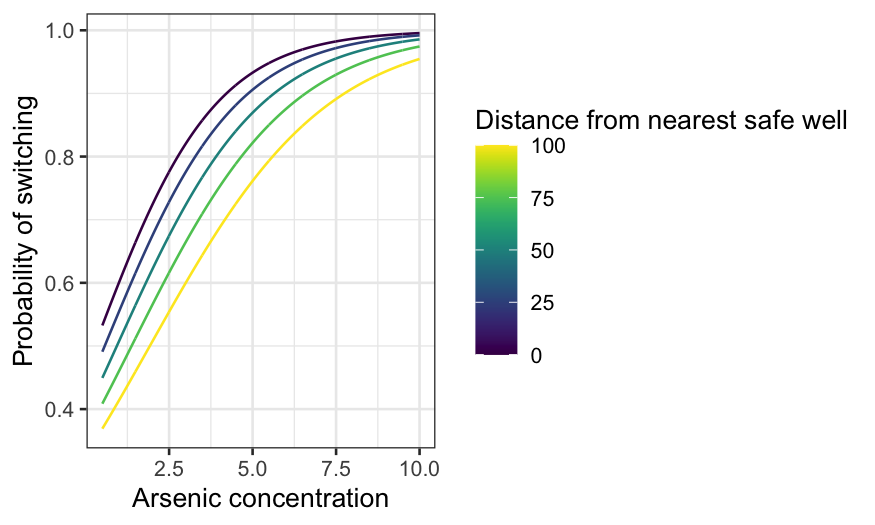
The curves actually get further apart at first as arsenic increases (up to a point.) That is, the curves for short distances rise quite quickly as arsenic increases, while the curves for long distances rise more slowly. Eventually, for exceptionally high levels of arsenic, the curves come together (because they can’t go any higher than 1.)
Distance and arsenic are both good predictors and there’s no reason
to think there shouldn’t be an interaction, so keep the interaction
term. Now let’s add assoc and educ to the
model and see if the fit makes sense.
##
## Call:
## glm(formula = switch ~ dist * arsenic + assoc + educ, family = "binomial",
## data = wells)
##
## Deviance Residuals:
## Min 1Q Median 3Q Max
## -2.7303 -1.1892 0.7444 1.0675 1.6987
##
## Coefficients:
## Estimate Std. Error z value Pr(>|z|)
## (Intercept) -0.291120 0.131427 -2.215 0.02675 *
## dist -0.006081 0.002093 -2.905 0.00367 **
## arsenic 0.553238 0.069542 7.955 1.79e-15 ***
## assoc -0.123188 0.076977 -1.600 0.10953
## educ 0.041948 0.009594 4.372 1.23e-05 ***
## dist:arsenic -0.001612 0.001022 -1.577 0.11482
## ---
## Signif. codes: 0 '***' 0.001 '**' 0.01 '*' 0.05 '.' 0.1 ' ' 1
##
## (Dispersion parameter for binomial family taken to be 1)
##
## Null deviance: 4118.1 on 3019 degrees of freedom
## Residual deviance: 3905.4 on 3014 degrees of freedom
## AIC: 3917.4
##
## Number of Fisher Scoring iterations: 4Years of education has a positive coefficient, which makes sense. We can keep that in the model.
Association membership has a negative coefficient, which doesn’t make causal sense: it would be strange for association membership to make you less likely to switch wells, unless you were a member of the Association for Arsenic Being Good for You. If our sole goal was prediction, we could do a careful cross-validation to see if association membership did help predict more accurately. Since we’re doing EDA, we can drop the association term.
##
## Call:
## glm(formula = switch ~ dist * arsenic + educ, family = "binomial",
## data = wells)
##
## Deviance Residuals:
## Min 1Q Median 3Q Max
## -2.7149 -1.1886 0.7478 1.0689 1.7223
##
## Coefficients:
## Estimate Std. Error z value Pr(>|z|)
## (Intercept) -0.349044 0.126360 -2.762 0.00574 **
## dist -0.006047 0.002095 -2.886 0.00390 **
## arsenic 0.555367 0.069531 7.987 1.38e-15 ***
## educ 0.042306 0.009581 4.415 1.01e-05 ***
## dist:arsenic -0.001629 0.001023 -1.592 0.11145
## ---
## Signif. codes: 0 '***' 0.001 '**' 0.01 '*' 0.05 '.' 0.1 ' ' 1
##
## (Dispersion parameter for binomial family taken to be 1)
##
## Null deviance: 4118.1 on 3019 degrees of freedom
## Residual deviance: 3907.9 on 3015 degrees of freedom
## AIC: 3917.9
##
## Number of Fisher Scoring iterations: 4We now add the remaining two-way interactions. In general, if you only have a few terms, you might as well include all the two-way interactions unless you have a good reason not to.
At this point our model is too complicated for it to be worth trying
to interpret the numbers. Let’s extract the fitted values and residuals,
and plot the latter against the former. Note that the default of
augment() is to extract the deviance residuals instead of
the response residuals, if you know about and prefer deviance residuals
you can specify them instead.
switch_model_df = augment(switch_model, type.residuals = "pearson")
ggplot(switch_model_df, aes(x = .fitted, y = .resid)) +
geom_point() +
geom_smooth(method = "loess", method.args = list(degree = 1)) +
xlab("Fitted values") +
ylab("Residuals")## `geom_smooth()` using formula 'y ~ x'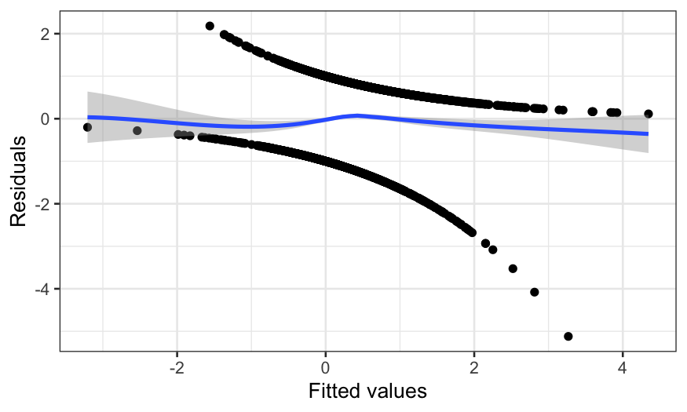
The points on the plot fall exactly on two lines, so look at the smooth instead. We see there’s a little bit of waviness. This is fairly typical for logistic regression: there’s no reason why the relationship between probability and the predictors should have that exact functional form. But the improvement in fit you get from fitting a nonparametric model is fairly small.
Now plot the residuals against distance. What we’re looking for here is whether the function form is correct, or whether we need more flexibility in how we use distance to predict switching.
ggplot(switch_model_df, aes(x = dist, y = .resid)) +
geom_point() +
geom_smooth(method = "loess", method.args = list(degree = 1)) +
xlab("Distance from nearest safe well") +
ylab("Residuals")## `geom_smooth()` using formula 'y ~ x'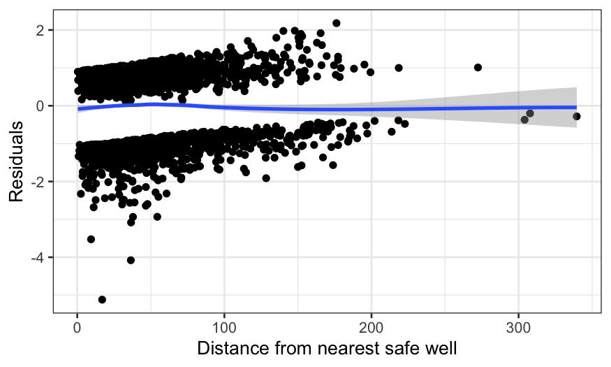
There’s a wiggle, but this is basically fine – the zero line is enclosed in the confidence band.
Now let’s do the same plot with arsenic on the \(x\)-axis:
ggplot(switch_model_df, aes(x = arsenic, y = .resid)) +
geom_point() +
geom_smooth(method = "loess", method.args = list(degree = 1)) +
xlab("Arsenic concentration") +
ylab("Residuals")## `geom_smooth()` using formula 'y ~ x'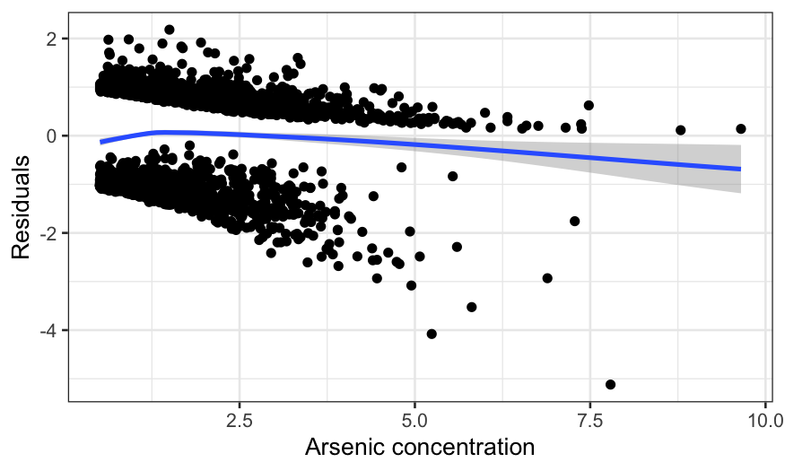
This is much worse. The curve is too low, then rises too high, then declines again. In fact, the extreme left hand side is the biggest problem, since the lack is fit is real and the data is dense there. The negative average residual there means that for arsenic levels just over the threshold, the probability of switching is overestimated (negative average residuals occur when there are more zeroes in the response than the model expects.)
Education isn’t that interesting since the effect is much smaller, but let’s do it for completeness.
ggplot(switch_model_df, aes(x = educ, y = .resid)) +
geom_point() +
geom_smooth(method = "loess", method.args = list(degree = 1)) +
xlab("Years of education") +
ylab("Residuals")## `geom_smooth()` using formula 'y ~ x'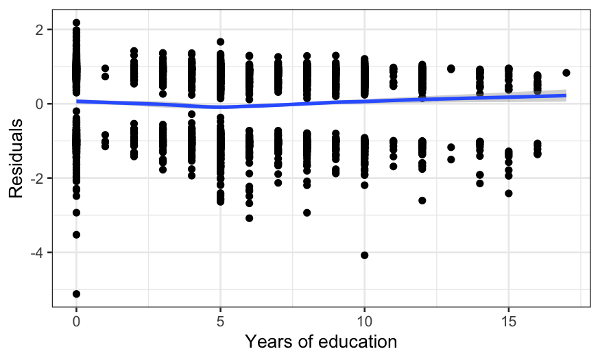
Again, the fit is imperfect.
Remember when we said we might need to transform? The last couple of graphs suggest that while a transformation of distance is unnecessary, a transformation of arsenic is. A transformation of education would probably help too, but since the variable is weird and not that important we won’t bother. We’ll take the log arsenic and refit the model.
Now plot the residuals of this new model against log arsenic:
ggplot(log_arsenic_model_df, aes(x = log.arsenic, y = .resid)) +
geom_point() +
geom_smooth(method = "loess", method.args = list(degree = 1)) +
xlab("Log arsenic concentration") +
ylab("Residuals")## `geom_smooth()` using formula 'y ~ x'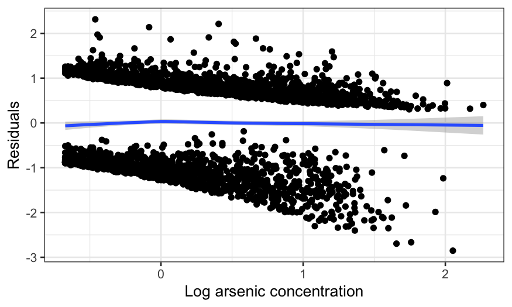
It’s a lot better. I’m fairly happy with the model at this point.
Let’s take a look at the fit. Fix education at its median, and draw arsenic curves for several distances:
switch_grid = expand.grid(arsenic = seq(0.5, 10, 0.01), dist = seq(0, 100, 25), educ = 5)
switch_grid$log.arsenic = log(switch_grid$arsenic)
log_arsenic_pred_grid = augment(log_arsenic_model, newdata = switch_grid,
type.predict = "response", type.residuals = "pearson")
ggplot(log_arsenic_pred_grid, aes(x = arsenic, y = .fitted, group = dist, color = dist)) +
geom_line() +
xlab("Arsenic concentration") +
ylab("Probability of switching") + scale_color_viridis()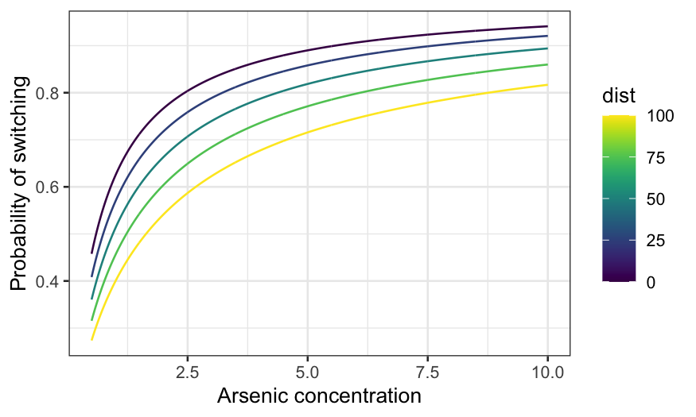
There are 3! ways you can assign the three variables to \(x\)-axis, conditioning variable, and fixed. You probably get the idea at this point, though, so let’s just do one more:
switch_grid_2 = expand.grid(arsenic = seq(0.5, 10, 0.01), dist = median(wells$dist), educ = c(0, 5, 10))
switch_grid_2$log.arsenic = log(switch_grid_2$arsenic)
log_arsenic_pred_grid_2 = augment(log_arsenic_model, newdata = switch_grid_2,
type.predict = "response", type.residuals = "pearson")
ggplot(log_arsenic_pred_grid_2,
aes(x = arsenic, y = .fitted, group = educ, color = factor(educ))) +
geom_line() +
xlab("Arsenic concentration") +
ylab("Probability of switching") +
labs(color = "Education") +
scale_color_manual(values = c("#999999", "#E69F00", "#56B4E9"),
labels = c("0 years", "5 years", "10 years"))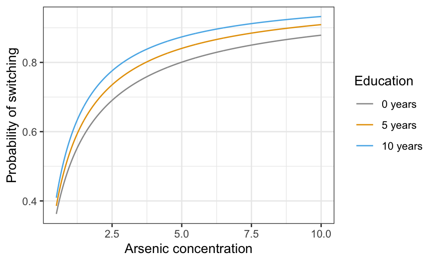
If you really care about prediction but still want to be able to interpret the model, try a nonparametric model such as a generalized additive model (GAM) or loess. To overgeneralize, GAM is often better/easier when you have lots of predictors, while loess is often better/easier when you have complex interactions. You can learn more about these in S425/625.
If you really, really care about predictions then you can use machine learning techniques. The improvement in prediction is usually quite small, however, and you’ll lose a lot or all the interpretability.